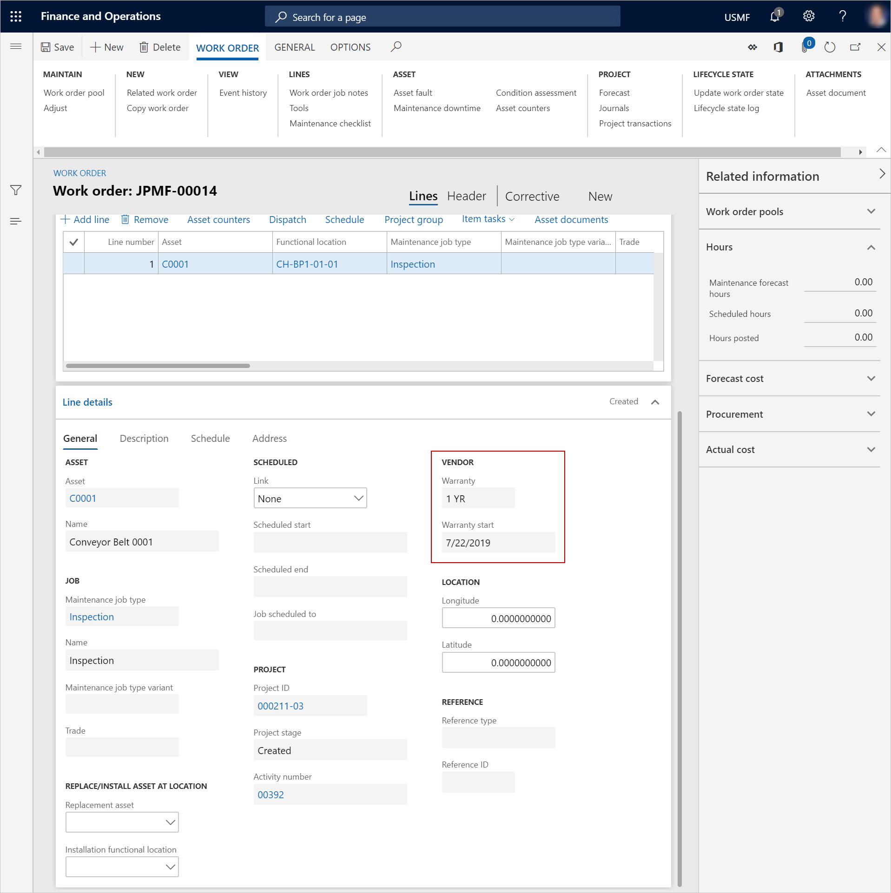

Garantien auf Anlagen und Anlagearten
Important
Dynamics 365 for Finance and Operations hat sich zu speziell entwickelten Anwendungen entwickelt, mit denen Sie bestimmte Geschäftsfunktionen verwalten können. Weitere Informationen zu diesen Änderungen finden Sie im Dynamics 365-Lizenzierungshandbuch.
In diesem Abschnitt wird erläutert, wie Sie im Anlagenmanagement Garantien auf Anlagen und Anlagenarten einrichten.
Einrichten einer Garantie für eine Anlagenart
- Wählen Sie Anlageverwaltung > Einstellungen > Anlagentypen > Anlagentypen aus.
- Wählen Sie im linken Bereich die Anlagenart aus, an die eine Garantievereinbarung des Lieferanten angehängt werden soll, und wählen Sie dann Anlagentypvorgaben.
- Wählen Sie im Feld Allgemein FastTab im Feld Lieferantengarantie die Vereinbarung aus.
Einrichten einer Garantie für eine Anlage
Wählen Sie Anlagenverwaltung > Allgemeines > Anlagen > Alle Anlagen.
Wählen Sie die Anlage aus und wählen Sie dann Bearbeiten.
Wählen Sie auf der Registerkarte Lieferant FastTab im Abschnitt Lieferantengarantie, im Feld Garantie die Garantievereinbarung aus.
Wählen Sie in den Feldern Garantiebeginn und Garantieende das Start- und Enddatum aus.
Important
Wenn bei einem Arbeitsauftrag im Feld Gewährleistungsbeginn ein Datum ausgewählt wird, gilt die Garantie für den Arbeitsauftrag zu diesem Datum. Wenn Sie einen Arbeitsauftrag anlegen, wird das Feld Garantiebeginn automatisch auf das Erstellungsdatum gesetzt. Sie können das Datum jedoch so ändern, dass es z.B. dem Startdatum einer Garantievereinbarung entspricht.

Note
Wenn Sie einen Arbeitsauftrag für eine Anlage anlegen, die unter eine Lieferantengarantie fällt, erhalten Sie eine Benachrichtigung über die Garantievereinbarung, wenn der Arbeitsauftrag ein voraussichtliches Startdatum innerhalb der Garantiezeit hat. Anschließend können Sie den Arbeitsauftrag nach Bedarf stornieren.